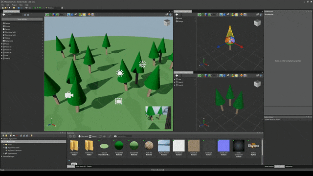
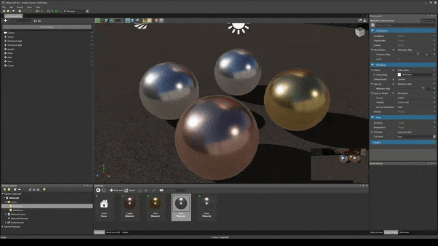
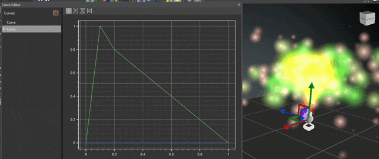

Xenko 1.6 release notes
Highlights
Prefabs
Prefabs allow you to assemble entities into building blocks and easily reuse them in any of your scenes. Changes to your prefabs will be reflected on all instances (as long as properties are not overridden).
We even took the concept one step further to empower our users, by having prefabs within prefabs, as well as the possibility to use only part of a prefab when you instantiate it. And of course, removing or rearranging a few entities won't break your prefab synchronization!
Archetypes
You can now use any asset as an archetype for another asset. When you change a property of the archetype, the new value will be automatically propagated to all the derived assets, unless you specifically override them. Archetypes can be used with most asset types.
Particles
You can now create and edit particle systems directly in the Xenko Game Studio. Particles are deeply integrated in the game engine and leverage the powerful effect system and its high level of customization.
While there are still several features on the roadmap, the current implementation is sufficient for most games. The ability to customize almost all aspects of the particle engine allows you to add features tailored to your game's specific needs.

Feel free to visit our particle documentation.
Features
The particle engine supports many features out of the box:
- Render particles as different shapes like billboards, 3D oriented quads or your own custom implementation
- Powerful force fields which offer more control than simple attractors and repulsors
- Collisions
- Animated attributes such as size, color, rotation
- Flip books, UV animation and support for the Xenko Shading Language
- Ribbons and trails renderers added to the engine. Check out our tutorial for more details.
Modular system
All aspects of particle systems are broken down into individuals modules like spawners, initializers and updaters, and each of these modules is easily tweakable and customizable. Check out the samples and the Xenko documentation for a detailed walk-through.
Curve Editor
The Game Studio now also comes with a built-in curve editor. For now only the particle engine uses curve animation. In the future, it will also power our property animation system and our storyboard system.
New Graphics Engine
Most of our graphics pipeline, both low-, medium- and high-level, has been almost completely rewritten, and should be ready for the future.
The low-level API has been changed to more closely resemble DirectX 12 and Vulkan. For a list of breaking changes, please see below.
The high-level pipeline has been completely reworked, to achieve the following goals, most of which we will tackle in the upcoming releases:
- Introduce a clean and extensible architecture to easily build new graphics features on (hoping to soon add a Forward+ renderer, IBL light probes, RLR, etc.)
- New medium-level layer: lightweight RenderFeature, RenderStage, RenderObject, etc.
- Easy for users to write small customizations (by implementing RenderFeatures)
- Allow multi-threading of all parts of the pipeline
- Make optimal use of next-gen graphics APIs
- Reduce the amount of "magic" done by the effect system to increase performance
- Minimize work by taking better advantage of different update frequencies (PerView, PerMaterial, PerLighting, etc.)
- Take advantage of new API (first class support for Pipeline State Objects, Descriptor Sets, etc.)
Stay tuned for technical details and performance evaluation in the near future!
Direct3D 12
Direct3D 12 has been added as a new build target. While still experimental, it already supports all parts of our rendering pipeline.
You can try it by changing the ‘Preferred Graphics Platform’ in the ‘Rendering Settings’ of your ‘Game Settings’ asset.
Better OpenGL support
Our OpenGL renderer has been improved and should behave much better (shadows, PBR, etc.). Also, we now deliver OpenGL and OpenGL ES on Windows as build targets.
You can also try them by changing the ‘Preferred Graphics Platform’ in the ‘Rendering Settings’ of your ‘Game Settings’ asset.
Scripts are now components
So far, there could only be one component per type on an Entity. This was quite cumbersome, especially for scripts, which had to be stored inside the ScriptComponent.Scripts list. It also resulted in many special cases to make them work in the editor (i.e. references between scripts, assembly reloading, etc.).
Now multiple components of a type are allowed. This affects scripts and physics components, and can be used for custom components for which more than one instance is sensible.
We hope this makes your life easier!
Event system
We added a simple event system that will allow your script to easily communicate with each other.
Check out the EventKey<> and EventReceiver<> classes.
You can create an EventKey from your sender scripts and consume events using EventReceiver from other scripts.
Game Settings overrides
The Game Settings asset has been improved: You can now have different settings depending on the platform or GPU.
For example, you might want to set different off-screen resolutions for your game on Android depending on the GPU model. Or you could use one of our new Direct3D12, OpenGL or OpenGL ES renderers on Windows.
Version 1.6.7-beta
Release date: 2016/06/09
Enhancements
Game Studio
- Don't wait for editor initialization before showing the editor window. This should prevent editor layouts from suddendly switching without notice, especially when opening a big scene.
- Save the list of opened editors more often (everytime a new editor is opened). Before it was only saved when editing the Game Studio properly and thus the list would not be saved when a crash occurred.
Issues fixed
Graphics
- D3D12: Static sampler didn't properly set comparison func and border, resulting in broken shadow maps
- OpenGL ES: Improved texture format supports depending on OpenGL ES version and extension presents (esp. for float texture on ES2)
- OpenGL ES: EXT_sRGB doesn't seem to properly work on Adreno 4xx, but since it is usually available through ES3 context, we use that first when available
- OpenGL: AMD GPU driver didn't like the fact there was no #version in the Copy GLSL shader
- OpenGL: Even though we use SDL, image loading now uses same code as WinForms/WPF (since SDL_image loading code is not implemented yet)
Assets
- AssetCompiler was caching assemblies so that they could be modified while running. This feature is only useful in development and was making thing both slower and causing too long path issues, it has therefore been disabled for end-user install (#410)
Engine
- Added missing XenkoDefaultFont root asset in default package, this makes the profiler system work again out of the box.
Game Studio
- Fix a crash that could occurs when loading a project that contains broken paths to resource files
- Prevent the Game Studio process to keep running when a fatal problem occurs during the loading
Particles
- Bug fix where two or more child entities concurrently try to update their parent entity's transform matrix.
Version 1.6.6-beta
Release date: 2016/05/27
Enhancements
Game Studio
- Don't force opening the default scene every time the Game Studio is started (except for new project). The default scene will only open if it was the case during the last session (same behavior as any other editor).
Issues fixed
Game Studio
- Fix an issue preventing to save editor layout when the history of projects reach the maximum size (currently 20 projects).
- Material Selection mode (which allows you to pick a material by clicking directly on the mesh area) was broken.
Engine
- Changed how OpenGL ES expected vs actual version is handled; this should fix various issues related to context creation on Android and also code targeting older OpenGL should be more consistent across devices.
- There was some issues for GPU resource disposal that might have lead to incorrect state (might fix some issues when closing scenes in the editor).
- ShadowMaps across multiple RenderViews were not working properly (same shadow map texture can be reused but in fact was not).
- Improved the engine's behavior when mobile apps require to handle multiple orientations.
Particles
- Fixed an issue where non-uniform scaling and rotation on the entities resulted in wrong rotation of the particle system. Currently only uniform scaling is supported.
Version 1.6.5-beta
Release date: 2016/05/17
Enhancements
Game Studio
- When an image is added to a sprite sheet, the texture region is now sized to the whole image by default.
- The dialog asking for assembly reloading only pops up when the Game Studio has focus.
- The dialog asking to save script only pops up for a script created from inside the Game Studio.
Issues fixed
Engine
- Fix negative index parameter of SpriteFromSheet.GetSprite throwing an exception. Negative index now circles around the collection of sprites (e.g. -1 return the last sprite).
- If a background component was enabled and then disabled, it would still render.
- MSAA rasterizer state was enabled even when not needed (with level 0 so it didn't affect much, except subtle differences in tessellation tests).
- Removed a ThrowNotImplementedException in OnSoundControllerListChanged, re-implemented the missing part.
- Made non generic EventKey and EventReceiver consume bool instead of byte
- Fix a possible crash in PhysicsColliderShape Compose
- Fix culling of shadows casters when no shadow receivers are present
Game Studio
- Fix issues in the sprite editor cache keeping old version of images after their source file had been changed.
- Fix issues in the sprite editor tool that sized incorrectly the texture region, borders or center.
- When closing editor, there was a NullReferenceException in the Gizmo System.
- Fix a crash when using audio and sound assets.
- Fix a crash when trying to copy the crash report itself.
- Fix a crash when adding scripts to entities
Version 1.6.4-beta
Release date: 2016/04/28
Issues fixed
- Fix an issue in the rotation editor when decomposing the rotation matrix into Euler angles.
- Some information were missing in the new GPU crash report
Version 1.6.3-beta
Release date: 2016/04/27
Enhancements
Game Studio
- Some manipulations with a multi-selection of entities are now faster.
- Improve prefab thumbnails
- Display an helper message in the curve editor on how to add a keyframe when the curve is empty
- Improved crash report so that we have more information about previous exceptions when GPU fails
Android
- Allow dynamic device orientation switching (desired orientations must be selected from Visual Studio)
iOS
- Allow dynamic device orientation switching (desired orientations must be selected from Visual Studio)
- Bumped minimum iOS version requirement from 6.0 to 7.0
- Made some internal classes public to allow fine control of Game start-up by overriding them (experimental)
Issues fixed
Game Studio
- Fix an issue in the sprite editor preventing to properly edit newly added frames
- Fix a cache issue in the sprite editor preventing to the magic wand to work properly after modifying a source image externally (#389)
- Fix a crash that could occur when manipulating the Materials of a model component in the scene editor
- Fix a crash when loading projects with Audio related components/assets
- Fix a crash that might occur when closing an editor
- Fix an issue when asset compiler was failing but not properly returning error. As a result, it was easy to run into issue like running the game once and keep it in background (lock files), editing, and when running it again it would still use the older compiled assets.
- Lights and camera gizmo were improperly scaled
Rendering
- Camera now ignore scaling when computing view matrix
- Made various types public instead of internal, so that user can easily extend the rendering pipeline by themselves
- EffectValidator was failing on effects without any permutation values (#378)
- Added a debugger proxy for the new ParameterCollection
- MSAA parameters are now properly forwarded to the main swap chain. Note that it still can't be used in RenderFrame until MSAA targets are properly resolved.
Particles
- Fix an issue with particles ignoring camera groups when rendering (#380).
- Fix a crash when Spawner's duration and delay were both 0 (#384).
Android
- The Activity is not destroyed anymore when changing device orientation
iOS
- Fixed a native library dependency issue that prevented Xamarin Incremental build to work properly (There is still a possibly Xamarin side bug preventing this feature to work properly)
- Animation engine custom IL code was not working with latest Xamarin AOT, this is now fixed
Built-in Scripts
- Fixed PlayerController script to reflect physics component changes
Version 1.6.2-beta
Release date: 2016/04/04
Issues fixed
Game Studio
- The Sprite editor was not properly working anymore due to a regression in 1.6.1-beta
- Referencing an entity inside its own script was crashing the Game Studio
- Fix a concurrency issue that could make the Game Studio crash occasionally
- Tooltip with no text were displayed above some properties
Graphics
- Fix a potential issue in the lighting code
Version 1.6.1-beta
Release date: 2016/03/30
Enhancements
Particles
- Ribbons and trails renderers added to the engine. Check out our tutorial for more details.
Game Studio
- Add statistics on asset usage in the references panel.
- Edition of a string key (e.g. animation key name) can be done inline.
- Improve performance of the curve editor.
- To ease edition of a vector compute curve in the curve editor, other components are also displayed.
- Textboxes in property grid display their content in tooltip.
- Allow to see the property of an asset while it is open in its editor
- Samples and new games now have resource files in an "Resources" folder instead of "RawAssets"
Physics
- Added proper entity offset in CharacterComponent Teleport.
- Added utility method Ended in Collision, to avoid writing do/while constructs.
Issues fixed
Game Studio
- Fix memory leaks happening when opening and closing scene editor repeatedly
- Fix frequent crash on GameStudio startup because of a thread race condition when setting up file systems
- Fix issue on tree views that sometimes selected the same item more that once, resulting in incorrect property display on property grid.
- Fix issue with maximized window size on multi-monitor system (#361)
- Fix resetting value of a rotation in the property grid.
- Fix save, undo and redo not working on curve editor when the window is in floating mode (was already working when docked).
- Fix zooming issue in curve editor.
- Fix particles not being rendered in thumbnails and asset preview.
- Fix shaders not being reloaded dynamically on shader code file save.
- Fix disappearing Physics Gizmos
- Fix missing settings in NewGame
- Restored different color for trigger collider shapes in debug renderer.
- Fix a crash occurring when closing a scene or prefab editor, or closing the GameStudio itself
- Fix an issue when modifying members of structures in the property grid
- Prevent the property grid to be cleared when switching from a selection of asset to a selection of entities
Graphics
- Structs can now be used in shaders. Switched light shaders to use them
- Improve
EffectReflectionAPI - Fix many issues related to fullscreen switching and alt-enter is now fully supported.
- Fix reflection of array texture types (#369)
- Add missing CommandList.SetBlendFactor() method
Engine
- Various memory leaks fixed
- Remote effect compilation was broken when done with another computer the game was built with
- Used effect notification was failing when shaders were using custom permutation keys
- Fix Entity.EnableAll ignored argument, you can now use this method properly.
Physics
- Fixed CylinderColliderShape issues with Scaling.
Version 1.6.0-beta
Release date: 2016/03/15
How to upgrade
Simply open your older projects with new version of GameStudio. It will probably fail to compile your assemblies since API changed little bit, but you can still continue.
Then, save back your project in GameStudio. You now can open your project with Visual Studio and try to fix your game code with latest API changes.
Enhancements
Assets
Engine
- The KeyedSortedList now implements ICollection
instead of IList and is more consistent with CollectionDescriptor.
Game Studio
- Support for prefabs, add a prefab editor
- Create derived assets and support property inheritance
- Added a curve editor to edit animation curve
- Layout is saved on a solution basis. When reloading a project, Game Studio will try to present the same layout and reopen all assets that were edited (this include scenes, prefabs and sprite sheets).
- Add a confirmation dialog to enable saving newly created script automatically.
- Add a confirmation dialog to enable reloading modified assemblies automatically. This is necessary for the script to appear in the list of components that can be added to an entity.
- Physics gizmos are shown by default.
- Preview of an asset can be displayed even if this asset is being edited.
- Project folder can be opened in Windows explorer from the launcher with right-clicking.
- Properties of derived asset are displayed in gray, unless they are overridden. In this case they are displayed in bold.
- Rework scene initialization in the scene editor: the scene will be available almost immediately, and content (model, etc.) will be streamed in as soon as they are (asynchronously) loaded.
- The entity fixup wizard has been removed. Now when an entity is deleted, all references to it or to one of its component is reset to null.
- The gizmo and camera menus are now displayed in the top-right corner.
- Entity hierarchy is synchronized (automatically expanded) with the selected entity in the scene.
Graphics
- New D3D12 renderer (experimental)
- New Windows OpenGL and OpenGL ES renderers (experimental)
- Rewrote most of the low- and high-level graphics code to have better performance and better take advantage of new graphics APIs
- Properly separated rendering in 4 phases: Collect (collect & cull), Extract (copy data from scene to renderers), Prepare (prepare cbuffer data & heavy computations), Draw (emit draw calls)
- Introduced concepts of RenderFeature (entry point for extending rendering), RenderStage (effect selection), RenderView and RenderObject
- Render sorting logic can now be customized (culling will be soon too)
- Low-level API has been rewritten to match better new API: CommandList, DescriptorSet, DescriptorHeap, PipelineState, etc.
- Introduced concept of RendererProcessor which are responsible for pushing component data to rendering
- Many other changes, that will soon be covered in documentation
Input
- Improved GamePad event management to resemble the keyboard API.
Issues fixed
Game Studio
- Fix Scripts thumbnail generation during project launch.
- Fix Settings window sharing columns layout with property grid (#341).
- Fix default IDE settings incorrectly reset to null.
- Fix a crash occurring when duplicating an object quickly after selecting it.
- Fix an issue with the message box incorrectly resizing.
- Tooltips are always visible even if the control (menu, button…) is disabled.
- Fix several issues with undo/redo.
- Fix drag and drop of components into properties
- Sometimes the Game Studio was not asking to save when closed with some changes in a project.
- Fix some issues related to folders in scene editor.
- Redo does not re-open asset picker anymore.
Graphics
- Tangents generation was invalid and might have resulted in various swaps
Physics
- Improved collision detection reliability
- Fixed collision filter groups
- Fixed enable/disable component behavior
Breaking changes
Graphics
- Extending rendering is quite different from before. Please check SpaceEscape and other samples to have a better idea while we prepare documentation.
- Many methods of GraphicsDevice have been split off into a second class: CommandList
- Added objects such as PipelineState, DescriptorSet and DescriptorHeap to better match new graphics API
- Game now contains a GraphicsContext which gives access to the current CommandList
- GraphicsDevice.BackBuffer and GraphicsDevice.DepthStencilBuffer are gone. Use GraphicsDevice.Presenter.BackBuffer to access the actual backbuffer.
- In addition to RenderContext, there is now a RenderDrawContext. Some methods have been changed to expect the latter.
- ParameterCollection has been rewritten to be much more memory and performance efficient (data is now stored directly in buffers).
- Transferring values from application to shaders and computation of effect permutations used to be done through various inefficient ParameterCollection overrides. This should now be done using RenderFeatures.
Physics
- PhysicsComponents are now split into 3 different types (Rigidbody, Character, StaticCollider) which can be added multiple times in an entity.
- PhysicsElements are now removed, including the Collider, Rigidbody and Character classes. They now are merged into the new components.
Known Issues
- Sometimes duplicate contacts are detected by the physics engine